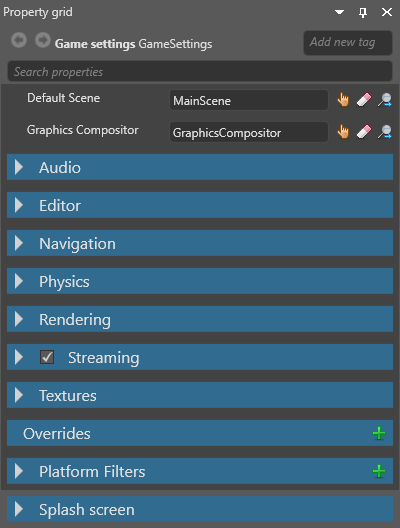
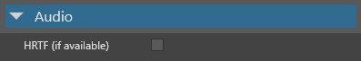
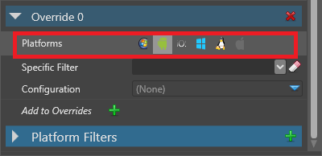

Game settings
Warning
Приносим свои извинения за неудобства. Для этой страницы нет перевода на русский язык. Она будет отображаться на английском языке.
Beginner Programmer Designer
You can configure the global settings of your game in the Game Settings asset. By default, the Game Settings asset is stored in your project's Assets folder.
Edit game settings
In the Solution Explorer (the bottom-left pane by default), select the Assets folder.

In the Asset View (the bottom pane by default), select the GameSettings asset.

In the Property Grid (the right-hand pane by default), edit the Game Settings properties.

Default scene
You can have multiple scenes in your project. The default scene is the scene Stride loads at runtime.
To set the default scene:
In the GameSettings properties, next to Default Scene, click
 (Select an asset).
(Select an asset).
The Select an asset window opens.
Select the default scene and click OK.
For more information about scenes, see Manage scenes.
Graphics compositor
You can have multiple graphics compositors in your project, but you can only use one at a time.
To set the graphics compositor:
In the GameSettings properties, next to Graphics compositor, click
(Select an asset).The Select an asset window opens.
Select the graphics compositor and click OK.
For more information, see Graphics compositor.
Audio

| Property | Description |
|---|---|
| HRTF support | Enable HRTF audio. Note that only audio emitters with HRTF enabled will produce HRTF audio. For more details, see HRTF. |
For more details about audio, see Audio.
Editor
The editor settings control how Game Studio displays entities in the Scene Editor. These settings have no effect on your game.
Note
How Game Studio displays entities is also affected by the Color space setting under Rendering.
| Property | Description |
|---|---|
| Rendering mode | How Game Studio renders thumbnails and Asset Previews |
| Animation framerate | The framerate of animations shown in Game Studio. This doesn't affect animation data. |
Navigation

Dynamic navigation mesh properties
| Property | Description |
|---|---|
| Enabled | Enable dynamic navigation on navigation components that have no assigned navigation mesh |
| Included collision groups | Set which collision groups dynamically-generated navigation meshes use. By default, meshes use all collision groups |
| Build settings | Advanced settings for dynamically-generated navigation meshes |
For more details, see Dynamic navigation.
Navigation group properties
| Property | Description |
|---|---|
| Item | The name of the group. |
| Height | The height of the entities in this group. Entities can't enter areas with ceilings lower than this value. |
| Maximum climb height | The maximum height that entities in this group can climb. |
| Maximum slope | The maximum incline (in degrees) that entities in this group can climb. Entities can't go up or down slopes higher than this value. |
| Radius | The larger this value, the larger the area of the navigation mesh entities use. Entities can't pass through gaps of less than twice the radius. |
For more details, see Navigation.
Physics

| Property | Description |
|---|---|
| Flags | CollisionsOnly disables physics except for collisions. For example, if this is enabled, objects aren't moved by gravity, but will still collide if you move them manually. ContinuousCollisionDetection prevents fast-moving entities erroneously moving through other entities. Note: other flags listed here currently aren't enabled in Stride. |
| Max sub steps | The maximum number of simulations the physics engine can run in a frame to compensate for slowdown. |
| Fixed time step | The length in seconds of a physics simulation frame. The default is 0.016667 (one sixtieth of a second). |
Rendering
| Property | Description |
|---|---|
| Default back buffer width | This might be overridden depending on the ratio and/or resolution of the device. On Windows, this is the window size. On Android/iOS, this is the off-screen target resolution. |
| Default back buffer height | This might be overridden depending on the ratio and/or resolution of the device. On Windows, this is the window size. On Android/iOS, this is the off-screen target resolution. |
| Adapt back buffer to screen | Adapt the ratio of the back buffer to fit the screen ratio |
| Default graphics profile | The graphics feature level required by the project |
| Color space | The color space (gamma or linear) used for rendering. This affects the game at runtime and how elements are displayed in Game Studio. |
| Display orientation | The display orientation of the game (default, portrait, left landscape, or right landscape). |
| Target graphics platform | The target platform Stride builds the project for. If you set this to Default, Stride chooses the most appropriate platform. For more information, see Set the graphics platform. |
Tip
To check which default platform your project uses, add a break point to your code (eg in a script), run the project, and check the value of the GraphicsDevice.Platform variable.
Streaming

| Property | Description |
|---|---|
| Streaming | Enable streaming |
| Update interval | How frequently Stride updates the streaming. Smaller intervals mean the streaming system reacts faster, but use more CPU and cause more memory fluctuations. |
| Max resources per update | The maximum number of textures loaded or unloaded per streaming update. Higher numbers reduce pop-in but might slow down the framerate. |
| Resource timeout (ms) | How long resources stay loaded after they're no longer used (when the memory budget is exceeded) |
| Memory budget (in MB) | When the memory used by streaming exceeds this budget, Stride unloads unused textures. You can increase this to keep more textures loaded when you have memory to spare, and vice versa. |
Note
Currently, only textures can be streamed.
For more details, see Streaming.
Textures

| Property | Description |
|---|---|
| Texture quality | The texture quality when encoding textures. Fast uses the least CPU, but has the lowest quality. Higher settings might result in slower builds, depending on the target platform. |
Overrides
You can override settings for particular platforms, graphics APIs, and so on. For example, you can set different texture qualities for different platforms.
With the GameSettings asset selected, in the Property Grid, under Overrides, click
 (Add).
(Add).
Game Studio adds an override.
In the new override, next to Platforms, select the platforms you want the override to apply to. You can select as many as you need.

Optional: If you want this override to apply only to a specific GPU platform, choose it from the Specific filter drop-down list.
You can add GPU platforms to this list under Platform filters (see Add a platform filter below).
In the Configuration drop-down menu, select the kind of setting you want to override (Editor, Texture, Rendering or Physics).

Set the options you want to override.
Add a platform filter
You can choose items in the Platform Filters list as a specific platform filter when you set an override (see above).
With the GameSettings asset selected, in the Property Grid, expand Platform Filters.
The Property Grid displays a list of platform filters you can use.

At the bottom of the list, click Add to Platform Filters.
Game Studio adds a new empty item.
In the item field, type the GPU filter you want to add.

After you add a platform filter, you can select it under Override > Specific filter.
Note
If the new filter isn't listed, remove the override and re-add it.
Splash screen
The splash screen is displayed when your game starts. The default is the Stride splash screen.
Note
The splash screen is only displayed when the game is built in release mode.

| Property | Description |
|---|---|
| Texture | The image (eg company logo) displayed as the splash screen. By default, this is StrideDefaultSplashScreen. |
| Color | The color the splash screen fades in on top of. By default, this is black (#FF000000). |
For more information, see Splash screen.